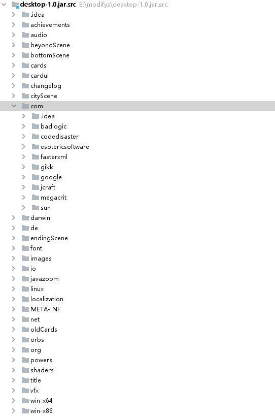
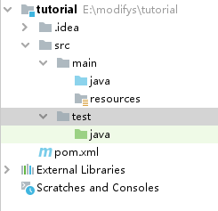

杀戮尖塔MOD入门教程
简介
杀戮尖塔的MOD都需要modthespire,stslib和basemod这三大支持库来支持，杀戮尖塔mod的本质是在游戏本体中通过第三方API [1]来添加自己的代码
图1 杀戮尖塔mod结构
杀戮尖塔本体是由java语言构建的，构建方式属于典型的面向对象式的。具体而言就是将众多方法分类封装，然后在程序需要的时候调用。对此，mod代码也可以仿照杀戮尖塔的本体结构来搭建。

图2 杀戮尖塔游戏本体代码结构
准备工作
游戏本体安装
（略）
下载必要的mod支持库
-
在杀戮尖塔的steam页面中找到创意工坊（有条件的同学可以科学上网，也可使用第三方steam加速器）
-
搜索stslib，basemod，以及modthespire。或是在右侧菜单勾选api寻找这三项。
-
点击订阅即可。
以上也是想要测试以及游玩其他人提供的mod的先决条件。
搭建mod开发环境
IDE的安装
杀戮尖塔由java语言编写，为了搭建mod这种大型java工程，我们可以使用IDE（集成开发环境）。目前主流的java IDE[2]有Eclipse和Intelij idea。本教程后面将以IJ作为示例进行讲解。
这两种IDE可以在官网上下载，其中Eclipse和Intelij的社区版都是免费的，可以直接使用。点击上文中的超链接即可在官网进行下载并安装。
maven环境配置
maven是一款程序框架搭建平台，使用它就可以搭建类似于杀戮尖塔这样结构的java程序。 下面讲解下windows环境的配置方法。其他操作系统的配置方法可参考此处。
首先通过超链接下载最新版本maven，然后在系统中设置环境变量如下：
- 找到 计算机-属性-高级系统设置 ，点击环境变量。
- 新建系统变量 MAVEN_HOME ，设置变量值：
E:\Maven\apache-maven-3.3.9（若已存在则可跳过此步） - 寻找系统变量 Path ，选择编辑，之后选择新建，写入
;%MAVEN_HOME%\bin
开始构建项目
构建步骤
至此我们完成了开发环境的配置，可以进行mod的开发工作了。下面以IJ为例来介绍如何构建一个项目：
- 打开ij，新建一个maven项目，不勾选选择框。随后填写项目名和文件地址。(本项目取名为tutorial作为示例)

- 进去之后如下编辑pom.xml：
<?xml version="1.0" encoding="UTF-8"?> <project xmlns="http://maven.apache.org/POM/4.0.0" xmlns:xsi="http://www.w3.org/2001/XMLSchema-instance" xsi:schemaLocation="http://maven.apache.org/POM/4.0.0 http://maven.apache.org/xsd/maven-4.0.0.xsd"> <modelVersion>4.0.0</modelVersion> <groupId>org.example</groupId> <artifactId>tutorial</artifactId> <version>0.1</version> <packaging>jar</packaging> <name>tutorialMod</name> <description>tutorial</description> <properties> <project.build.sourceEncoding>UTF-8</project.build.sourceEncoding> <steam.path>E:\SteamLibrary\steamapps</steam.path> </properties> <dependencies> <dependency> <groupId>bin</groupId> <artifactId>BaseMod</artifactId> <scope>system</scope> <version>1.0</version> <systemPath>${steam.path}/workshop/content/646570/1605833019/BaseMod.jar</systemPath> </dependency> <dependency> <groupId>bin</groupId> <artifactId>SlayTheSpire</artifactId> <scope>system</scope> <version>1.0</version> <systemPath>${steam.path}/common/SlayTheSpire/desktop-1.0.jar</systemPath> </dependency> <dependency> <groupId>bin</groupId> <artifactId>ModTheSpire</artifactId> <scope>system</scope> <version>1.0</version> <systemPath>${steam.path}/workshop/content/646570/1605060445/ModTheSpire.jar</systemPath> </dependency> </dependencies> <build> <finalName>tutorialMod</finalName> <plugins> <plugin> <groupId>org.apache.maven.plugins</groupId> <artifactId>maven-compiler-plugin</artifactId> <version>3.7.0</version> <configuration> <source>1.8</source> <target>1.8</target> </configuration> </plugin> <plugin> <groupId>org.apache.maven.plugins</groupId> <artifactId>maven-antrun-plugin</artifactId> <version>1.8</version> <executions> <execution> <phase>package</phase> <configuration> <target> <copy file="target/tutorialMod.jar" tofile="${steam.path}/common/SlayTheSpire/mods/tutorialMod.jar"/> </target> </configuration> <goals> <goal>run</goal> </goals> </execution> </executions> </plugin> </plugins> </build> </project>
在输入完代码后右下角会显示maven配置发生更改，此时选择import Changes即可。这段代码是maven的配置信息，其中包含了以下关键点：
-
这段代码的意思向指定目标文件夹输出编译好的jar文件，jar文件是代码包，也是所有mod的使用格式。在游玩时mod加载器会加载代码包中的文件，或者使用代码包中的代码覆盖游戏代码。version指的是版本控制中的版本号。
-
properties项中规定了该文件的编码方式为UTF-8，这种编码方式允许我们使用中文定义变量，也保证了输出代码的准确性。steam/path中是steam游戏所在的文件夹，可根据steamlibrary文件夹的位置修改。
-
dependencies加载了三个我们所需要的代码包，也就是上文所介绍的游戏主文件
desktop-1.0.jar,和两个支持包BaseMod.jarModTheSpire.jar -
build部分是关于jar的编译输出的，这里提示了maven的运作规律，会先生成测试文件夹，然后再将测试文件夹生成的文件拷贝到目标文件夹。
- 此时可以看出文件的组织结构如下：

其中：- .idea文件夹是IDE的辅助文件，与mod本身无关。
- src是程序的主体部分，分成main和test两部分，其中test是maven自动生成的测试文件夹，maven会自动处理好相关细节。最重要的是main文件夹，java是我们存放代码的地方，而resource文件夹用于存放角色或卡面等图片或json格式的文字素材。
这时我们可以在resource目录下写入ModTheSpire.json[3]，该文件向ModTheSpire标识了该Mod的加载信息，格式如下：
{ "modid": "totuiral", "name": "totuiralMod", "author_list": ["A","B"], "description": "新手教程mod", "version": "0.0.1", "sts_version": "03-29-2018", "mts_version": "2.6.0", "dependencies": ["basemod"] }
Json文件中用花括号{}代表代码块，方括号[]代表数组，要注意他们的配对。这样我们就完成了mod初期的搭建工作。
测试构建效果
构建框架的目的是为了输出mod文件，格式为jar。为此我们要进行maven的package操作来测试搭建效果：

点击右边的maven侧边，展开Lifecycle，这个指的是程序在输出执行的步骤。我们在这些步骤中双击package即可像杀戮尖塔的mod文件夹输出jar格式的mod。也可以点击上面的m按钮，在其中输入mvn package。
如果输出成功后，在steam中用withmod模式打开杀戮尖塔，即可在ModTheSpire画面中看到你刚才输出的文件中的标识信息。

在界面中我们勾选Basemod和ModTheSpire，以及刚刚输出的mod（toturialMod），然后选择运行就可以进入游戏。

游戏中进入mod菜单，我们可以看到我们写下的标识信息，但是因为没有写任何代码，这个mod暂时还没有任何功能。
作业
- 仿照上文的方式，输出一个jar格式的mod文件并在游戏中运行。给mod取一个名字，并在作者（Author）一栏写上你的ID。
- 研读加载mod时ModTheSpire的log框中的信息，尝试揣测他们是什么意思。
Mod开发语法基础
施工中